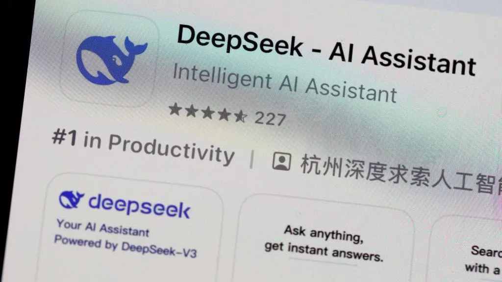

Australsk advarsel reiser spørsmål om personvern og sikkerhet
DeepSeek, den kinesiske AI-chatboten som har rystet både markedene og teknologibransjen, står nå under kritisk gransking fra australske myndigheter. Ed Husic, Australias vitenskapsminister, har blitt den første medlem av et vestlig regjering som fremmer bekymringer om personvern knyttet til appen. DeepSeek har blitt en av de mest nedlastede appene på verdensbasis, og har opplevd en eksplosiv vekst med 3 millioner nedlastinger på kort tid. Imidlertid er appens personvernspolicy og datainnsamling nå i fokus, ettersom den samler store mengder personlig informasjon, inkludert e-post, telefonnummer, brukerinput og til og med teknisk informasjon som IP-adresser og tastetrykk. Australske myndigheter har advart om risikoen for at data kan bli brukt til etterretningsformål, en bekymring som har blitt hevet av flere internasjonale aktører, inkludert USAs marinesoldater som har forbudt appen på grunn av "potensielle sikkerhets- og etiske bekymringer". Mens DeepSeek hevder at dataene lagres "på sikre servere" i Kina og brukes for å forbedre appens funksjoner, har eksperter på digitalt personvern advart om de potensielle konsekvensene for brukernes privatliv. Noen påpeker at appen ikke er alene om å samle inn slike data, og at mange andre plattformer, inkludert ChatGPT og Gemini, har lignende personvernvilkår. For de som vurderer å bruke DeepSeek, understreker ekspertene viktigheten av å være forsiktig med hvilken informasjon som deles, særlig med tanke på de usikkerhetene som har blitt reist rundt appens opprinnelse og databehandling. Er det trygt å bruke DeepSeek? Selv om mange brukere i Storbritannia og USA har lastet ned appen uten å nøle, advarer både eksperter og myndigheter om at det er viktig å være bevisst på hvilke data som samles inn, og hvordan de kan bli brukt.